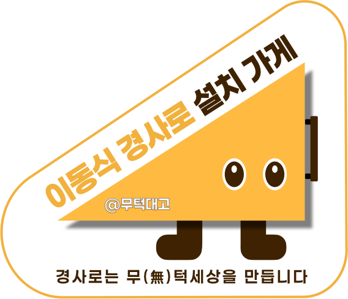

찾고, 준비하고, 설치해요
신청 방법 3단계
STEP 01
지역 검색
아래에서 우리 지역 지원사업을 찾으세요.
STEP 02
서류 준비
신청서와 간단한 서류만 준비하면 됩니다.
STEP 03
설치 진행
지원 결과와 현장 조건에 맞춰 설치합니다.
전국 지원사업
우리 지역 공고를
찾아보세요
접수 기간과 지원 조건을 먼저 살펴보고, 상세 화면에서 기관 원문까지 확인할 수 있습니다.

함께 쓰는 표시
이동식 경사로 설치 스티커
가게에 붙여 경사로가 준비된 공간임을 알려주세요.

현재 접수 중인 공고
신청 가능한 공고만 표시합니다.
현재 전국 수집 결과 중 접수 중이거나 예정된 공고가 없습니다.
기관 확인이 필요한 지원
상시·예산 소진·기관별 일정 사업입니다.
지난 공고
다음 모집 시기와 지원 조건을 살펴보는 참고 자료입니다.
정부24·기업마당과 등록된 지자체 원문을 전국 단위로 수집합니다. 신청 전 기관의 최신 원문을 다시 확인해 주세요.
설치 정보 등록
경사로가 필요한
공간을 알려주세요
무턱대고 팀이 설치 가능 여부를 함께 살펴볼 수 있도록 현장 정보를 남겨주세요. 작성 후 메일 앱에서 내용을 확인해 보내면 상담 요청이 완료됩니다.
- 가게 이름과 정확한 주소
- 연락받을 수 있는 전화번호 또는 이메일
- 턱의 높이와 입구 주변 상황
찾는 공고가 없나요?